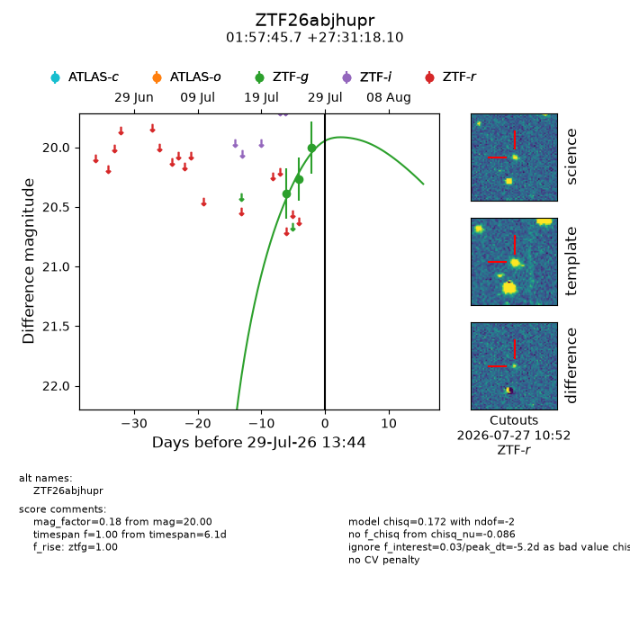
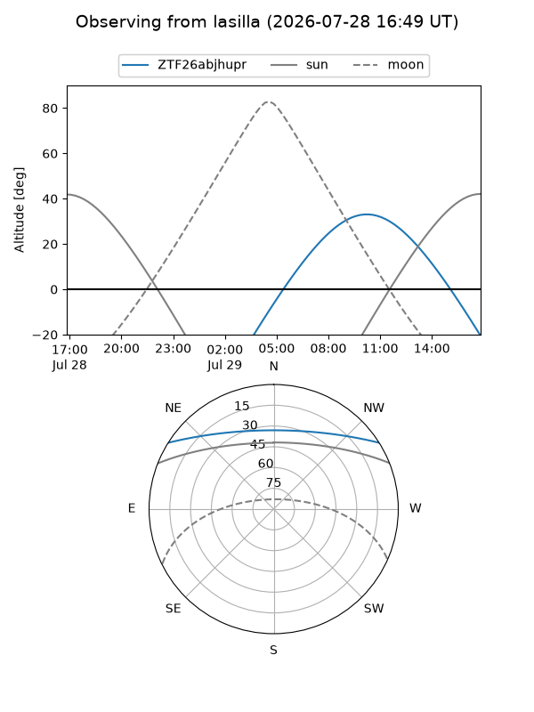
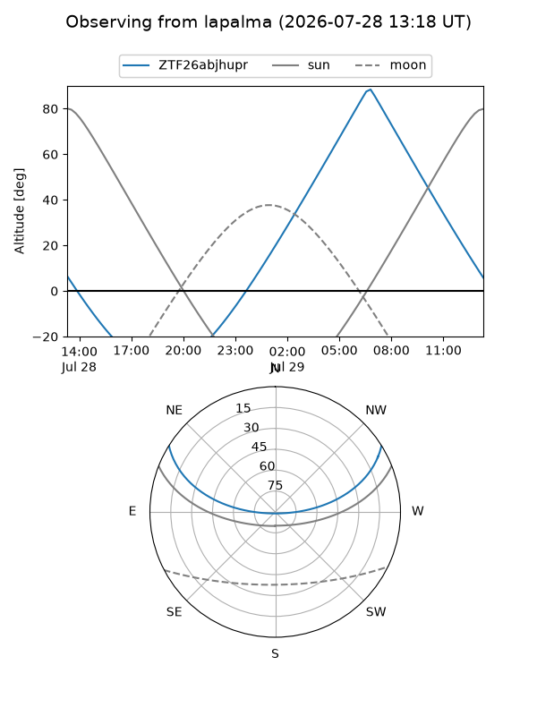
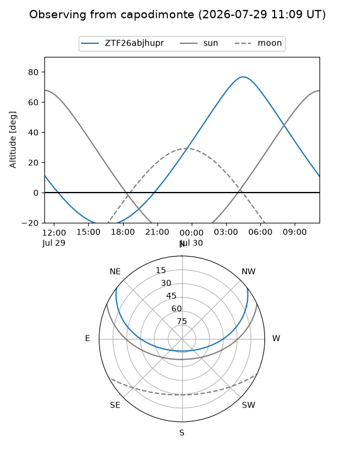
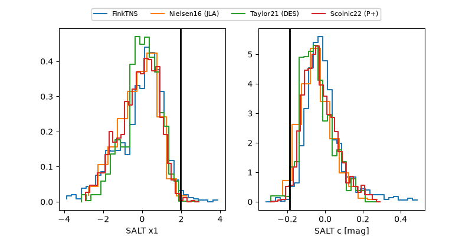

ZTF26abjhupr
Target ZTF26abjhupr at 2026-07-29 13:47
Aliases and brokers:
FINK-ZTF: ztf.fink-portal.org/ZTF26abjhupr
Lasair-ZTF: lasair-ztf.lsst.ac.uk/objects/ZTF26abjhupr
ALeRCE-ZTF: alerce.online/object/ZTF26abjhupr
Direct TNS query: direct search
alt names
ZTF26abjhupr (ztf,fink_ztf)
Coordinates:
equatorial (ra, dec) = 29.4406,+27.52169
equatorial (HMS+DMS) = 01:57:45.74,+27:31:18.10
galactic (l, b) = (140.5110,-33.07592)
Flags:
peak dt: -5.2
Photometry:
last ztfg=20.00
3 ztfg detections
Lightcurve

Visibility



Additional plots
